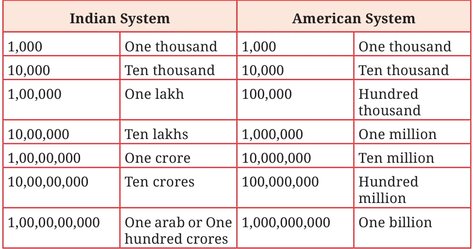

The table below shows some numbers according to both the Indian system and the American system (also called the International system) of naming numerals and placing commas. Observe the placement of commas in both systems.

Notice that in the Indian system, commas are placed to group the digits in a 3-2-2-2... pattern from right to left (thousands, lakhs, crores, etc.). In the American system, the digits are grouped uniformly in a 3-3-3-3… pattern from right to left (thousands, millions, billions, etc.). The Indian system of naming numbers is also followed in Bhutan, Nepal, Sri Lanka, Pakistan, Bangladesh, Maldives, Afghanistan, and Myanmar. The words lakh and crore originate from the Sanskrit words lakṣha (लक्ष) and koṭi (कोटि). The American system is also used in many countries. Observe the number of zeroes in 1 lakh and 1 crore. 1 lakh, written in numbers would be 1 followed by 5 zeroes. 1 crore, written in numbers would be 1 followed by 7 zeroes. A lakh is a hundred times a thousand, a crore is a hundred times a lakh and an arab is a hundred times a crore (i.e., a hundred thousand is 1 lakh, 100 lakhs is 1 crore, and 100 crores is 1 arab).
How many zeros does a hundred thousand have? ____ The number 9876501234 can be easily read by placing commas first:
- (a)\(9,87,65,01,234 \to 9\) arab 87 crore 65 lakhs 1 thousand and 234
or 987 crore 65 lakh 1 thousand 234 (in the Indian system).
- (b)\(9,876,501,234 \to 9\) billion 876 million 501 thousand 234 (in the
American system).